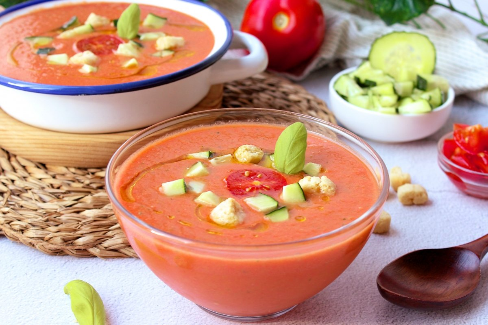

Gazpacho Andaluz al gusto
Una sopa fría refrescante perfecta para el verano.
Ingredientes
- 1 kg de tomates maduros
- 1 pimiento verde
- 1 pepino
- 1 diente de ajo
- 100 ml de aceite de oliva
- 30 ml de vinagre
- Sal al gusto

Instrucciones
- Lava y trocea los tomates, el pepino y el pimiento.
- Agrega el ajo, el aceite, el vinagre y la sal.
- Tritura todos los ingredientes hasta obtener una mezcla homogénea.
- Pasa por un colador si deseas una textura más fina.
- Refrigera y sirve bien frío.
Consejos
- Acompaña con picatostes o verduras picadas.
¡Refrescante y lleno de sabor!